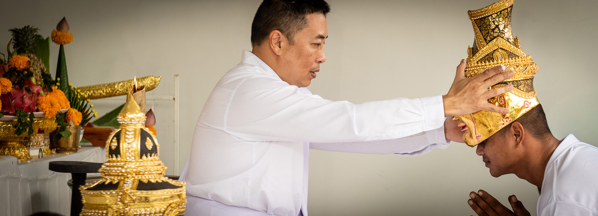
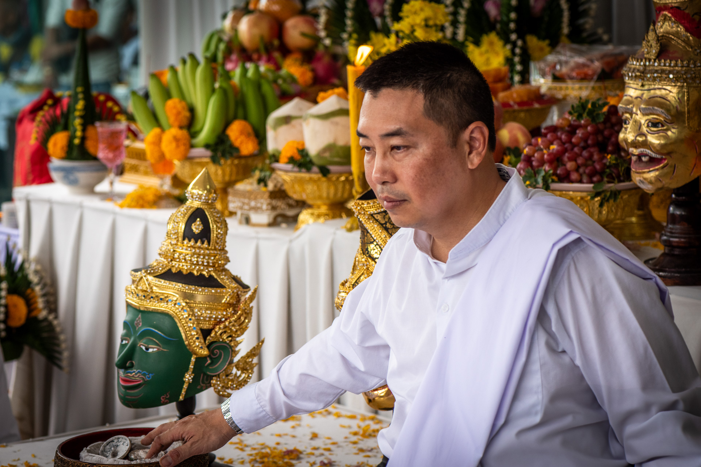

A traditional Sak Yant master based in Saraburi. He is located a little under two hours from Bangkok, bordering Ayutthaya, the ancient capital of Thailand.

Ajarn Jay is an established master craftsman of his art. He is able to trace his lineage. He is a traditionalist who knows the rules of Sak Yant deeply, the sacred script and incantations, and the proper way each yantra is meant to be done. His years and years as a tattooist have sharpened repetition into true mastery. The result is work his many disciples and fans genuinely admire.
His draftsmanship, his command of line, is what truly sets him apart. His tattoos are simply better looking than most: cleaner line, better composition, more beautifully rendered on skin. You can see it yourself, in the gallery below.
มากกว่าความขลัง คือมรดกไทยที่โลกยอมรับ เบื้องหลัง "ลายสักยันต์เสริมสิริมงคล" ทุกภาพ มีเรื่องราวและประวัติศาสตร์ที่สืบทอดกันมาอย่างยาวนานจากบรรพบุรุษไทย นี่ไม่ใช่แค่ความเชื่อ แต่คือศิลปะและวัฒนธรรมอันทรงคุณค่าที่แม้แต่ชาวต่างชาติยังมองเห็นความสำคัญและให้ความเคารพศรัทธา ร่วมสืบทอดมรดกแห่งสิริมงคลนี้ไปด้วยกันครับ
"More than mysticism, it is Thai heritage the world recognizes. Behind every auspicious yant design lies a story and a history passed down for generations from Thai ancestors. This isn't just belief, it's art and culture of real value, one that even foreigners can see the importance of and treat with respect. Let's carry this heritage forward together."
Hygiene and process. Ajarn Jay's process matches what's required of a licensed tattoo studio in the West: single-use disposable needles, gloves worn throughout, barrier protection on everything he touches during a session.
